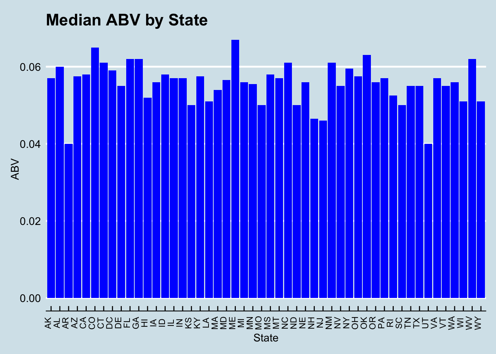
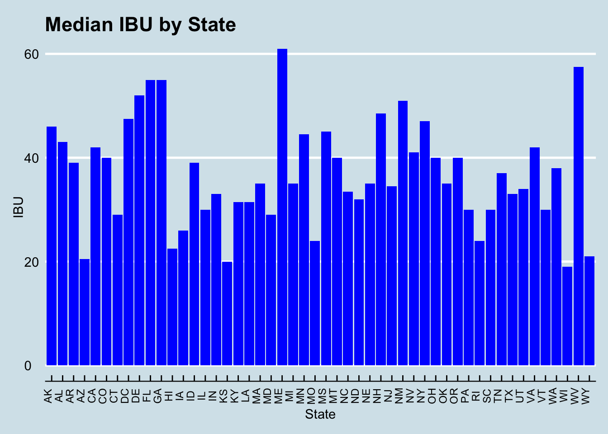
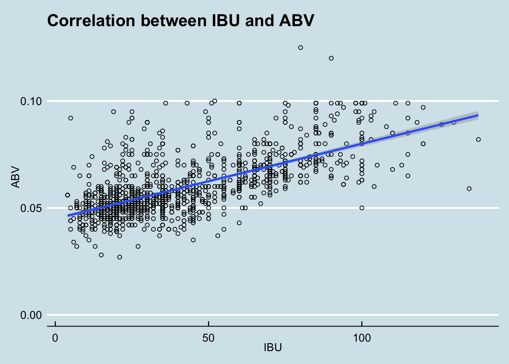

library(naniar)
library(tidyverse)## ── Attaching packages ─────────────────────────────────────────────────────────────────── tidyverse 1.3.1 ──## ✓ tibble 3.1.1 ✓ dplyr 1.0.6
## ✓ tidyr 1.1.3 ✓ stringr 1.4.0
## ✓ readr 1.4.0 ✓ forcats 0.5.1
## ✓ purrr 0.3.4## ── Conflicts ────────────────────────────────────────────────────────────────────── tidyverse_conflicts() ──
## x dplyr::filter() masks stats::filter()
## x dplyr::lag() masks stats::lag()library(ggplot2)
library(GGally)## Registered S3 method overwritten by 'GGally':
## method from
## +.gg ggplot2library(dplyr)
## Calling Data
beers = read.csv("/Users/kalenasberry/Desktop/Test website/Simple website/Beers.csv")
breweries = read.csv("/Users/kalenasberry/Desktop/Test website/Simple website/Breweries.csv")
##Summary of beers
summary(beers)## Name Beer_ID ABV IBU Brewery_id Style
## Length:2410 Min. : 1.0 Min. :0.00100 Min. : 4.00 Min. : 1.0 Length:2410
## Class :character 1st Qu.: 808.2 1st Qu.:0.05000 1st Qu.: 21.00 1st Qu.: 94.0 Class :character
## Mode :character Median :1453.5 Median :0.05600 Median : 35.00 Median :206.0 Mode :character
## Mean :1431.1 Mean :0.05977 Mean : 42.71 Mean :232.7
## 3rd Qu.:2075.8 3rd Qu.:0.06700 3rd Qu.: 64.00 3rd Qu.:367.0
## Max. :2692.0 Max. :0.12800 Max. :138.00 Max. :558.0
## NA's :62 NA's :1005
## Ounces
## Min. : 8.40
## 1st Qu.:12.00
## Median :12.00
## Mean :13.59
## 3rd Qu.:16.00
## Max. :32.00
## ##Summary of breweries
summary(breweries)## Brew_ID Name City State
## Min. : 1.0 Length:558 Length:558 Length:558
## 1st Qu.:140.2 Class :character Class :character Class :character
## Median :279.5 Mode :character Mode :character Mode :character
## Mean :279.5
## 3rd Qu.:418.8
## Max. :558.0## Analysis 1
Breweachstate <-table(breweries$State)
Breweachstate##
## AK AL AR AZ CA CO CT DC DE FL GA HI IA ID IL IN KS KY LA MA MD ME MI MN MO MS MT
## 7 3 2 11 39 47 8 1 2 15 7 4 5 5 18 22 3 4 5 23 7 9 32 12 9 2 9
## NC ND NE NH NJ NM NV NY OH OK OR PA RI SC SD TN TX UT VA VT WA WI WV WY
## 19 1 5 3 3 4 2 16 15 6 29 25 5 4 1 3 28 4 16 10 23 20 1 4head(beers)## Name Beer_ID ABV IBU Brewery_id Style Ounces
## 1 Pub Beer 1436 0.050 NA 409 American Pale Lager 12
## 2 Devil's Cup 2265 0.066 NA 178 American Pale Ale (APA) 12
## 3 Rise of the Phoenix 2264 0.071 NA 178 American IPA 12
## 4 Sinister 2263 0.090 NA 178 American Double / Imperial IPA 12
## 5 Sex and Candy 2262 0.075 NA 178 American IPA 12
## 6 Black Exodus 2261 0.077 NA 178 Oatmeal Stout 12head(breweries)## Brew_ID Name City State
## 1 1 NorthGate Brewing Minneapolis MN
## 2 2 Against the Grain Brewery Louisville KY
## 3 3 Jack's Abby Craft Lagers Framingham MA
## 4 4 Mike Hess Brewing Company San Diego CA
## 5 5 Fort Point Beer Company San Francisco CA
## 6 6 COAST Brewing Company Charleston SC## Merge both CSV togther
Brew_beers <- merge(x=beers, y=breweries, by.x = "Brewery_id", by.y = "Brew_ID")
## Rename
Brew_beers <- rename(Brew_beers, Beer = Name.x, Brewery = Name.y,
OZ = Ounces)
head(Brew_beers)## Brewery_id Beer Beer_ID ABV IBU Style OZ Brewery
## 1 1 Get Together 2692 0.045 50 American IPA 16 NorthGate Brewing
## 2 1 Maggie's Leap 2691 0.049 26 Milk / Sweet Stout 16 NorthGate Brewing
## 3 1 Wall's End 2690 0.048 19 English Brown Ale 16 NorthGate Brewing
## 4 1 Pumpion 2689 0.060 38 Pumpkin Ale 16 NorthGate Brewing
## 5 1 Stronghold 2688 0.060 25 American Porter 16 NorthGate Brewing
## 6 1 Parapet ESB 2687 0.056 47 Extra Special / Strong Bitter (ESB) 16 NorthGate Brewing
## City State
## 1 Minneapolis MN
## 2 Minneapolis MN
## 3 Minneapolis MN
## 4 Minneapolis MN
## 5 Minneapolis MN
## 6 Minneapolis MNMissingValues <- sapply(Brew_beers, function(x)sum(is.na(x)))
MissingValues## Brewery_id Beer Beer_ID ABV IBU Style OZ Brewery City
## 0 0 0 62 1005 0 0 0 0
## State
## 0# 4. Compute the median alcohol content unit for each state.
okay_beer <- Brew_beers %>%
na.omit() %>%
group_by(State) %>%
summarise(Median = median(ABV)) %>%
arrange(Median)
okay_beer## # A tibble: 50 x 2
## State Median
## <chr> <dbl>
## 1 " AR" 0.04
## 2 " UT" 0.04
## 3 " NJ" 0.046
## 4 " NH" 0.0465
## 5 " KS" 0.05
## 6 " MO" 0.05
## 7 " ND" 0.05
## 8 " SC" 0.05
## 9 " WI" 0.051
## 10 " LA" 0.051
## # … with 40 more rows# 4. a Compute the median international bitterness unit for each state.
Bitterness <- Brew_beers %>%
na.omit() %>%
group_by(State) %>%
summarise(Median = median(IBU)) %>%
arrange(Median)
Bitterness## # A tibble: 50 x 2
## State Median
## <chr> <dbl>
## 1 " WI" 19
## 2 " KS" 20
## 3 " AZ" 20.5
## 4 " WY" 21
## 5 " HI" 22.5
## 6 " MO" 24
## 7 " RI" 24
## 8 " IA" 26
## 9 " CT" 29
## 10 " MD" 29
## # … with 40 more rows# 4. b Plot a bar chart to compare ABV by state
library(ggthemes)
ggplot(data=okay_beer, aes(x=State, y=Median)) +
geom_bar(stat="identity", fill="blue")+
theme_economist() +
scale_color_economist()+
theme(axis.text.x=element_text(size=rel(0.8), angle=90)) +
ggtitle("Median ABV by State") +
labs(x="State",y="ABV")
# 4. c Plot a bar chart to compare IBU by state
ggplot(data=Bitterness, aes(x=State, y=Median)) +
geom_bar(stat="identity", fill="blue")+
theme_economist() +
scale_color_economist()+
theme(axis.text.x=element_text(size=rel(0.8), angle=90))+
ggtitle("Median IBU by State") +
labs(x="State",y="IBU")
##MAX ABV AND IBU
Brew_beers[which.max(Brew_beers$ABV),]## Brewery_id Beer Beer_ID ABV IBU Style OZ
## 375 52 Lee Hill Series Vol. 5 - Belgian Style Quadrupel Ale 2565 0.128 NA Quadrupel (Quad) 19.2
## Brewery City State
## 375 Upslope Brewing Company Boulder COBrew_beers[which.max(Brew_beers$IBU),]## Brewery_id Beer Beer_ID ABV IBU Style OZ
## 1857 375 Bitter Bitch Imperial IPA 980 0.082 138 American Double / Imperial IPA 12
## Brewery City State
## 1857 Astoria Brewing Company Astoria OR##SUMMARY
BeerSummary <- (summary(Brew_beers$ABV))
print(BeerSummary)## Min. 1st Qu. Median Mean 3rd Qu. Max. NA's
## 0.00100 0.05000 0.05600 0.05977 0.06700 0.12800 62# 7. Draw a scatter plot to compare relationship between beer
# bitterness and alcohol content
ggplot(Brew_beers, aes(x=IBU, y= ABV)) +
geom_point(shape=1) +
geom_smooth(method=lm) + # add linear regression line
theme_economist() +
scale_color_economist()+
theme(axis.text.x=element_text(size=rel(1.0)))+
ggtitle("Correlation between IBU and ABV ") +
labs(x="IBU",y="ABV")## `geom_smooth()` using formula 'y ~ x'## Warning: Removed 1005 rows containing non-finite values (stat_smooth).## Warning: Removed 1005 rows containing missing values (geom_point).
#8